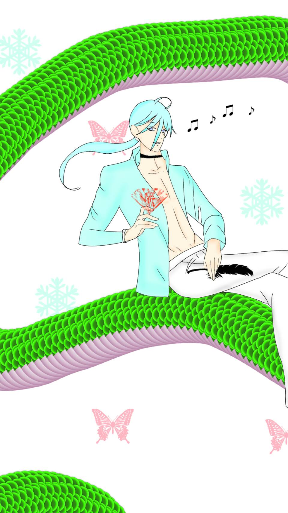

愚者
The Fool
四大元素：元素風--即思即行
代表的神話人物：酒神戴歐尼修斯
愚者是開悟前的智者，他天真、信任、不顧威權、勇於挑戰且充滿生命力，相信生命是支持他的。 愚者的心態自由，更不受世俗規範的約束，他既是那些創意的源頭，也是勇於展現自己的革命者。 儘管愚者容易因樂觀而沒有危機意識，但同樣也無人能預估愚者的潛力。
愚者卡牌充滿著未知，代表極大的「可塑性」。 卡牌顯示了生命的新階段展開，若正視眼前的情況，事情很有機會發生改變。
離開卡牌